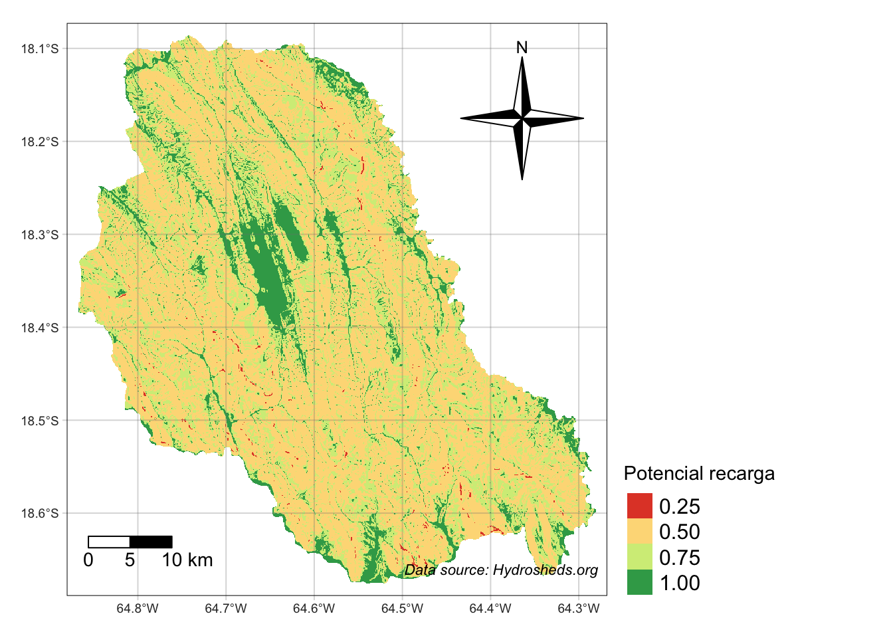
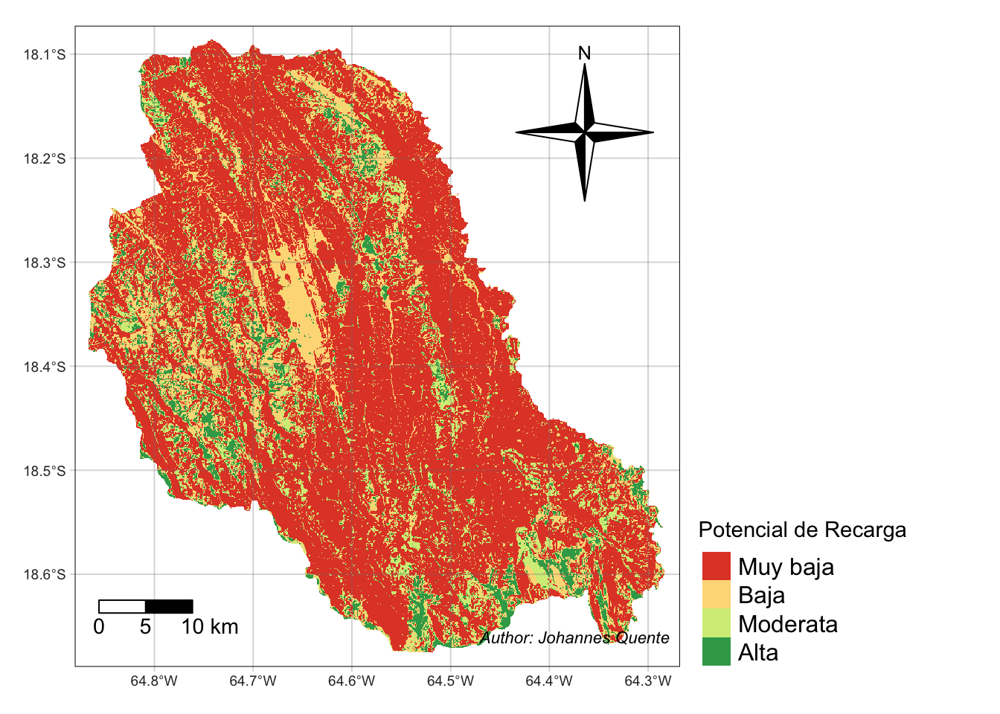

Code
# read libraries
library(raster)
library(terra)
library(ggplot2)
library(tmap)
library(sf)
library(dplyr)
library(tibble)
library(knitr)The study took place in Pasorapa, situated in the upper part of the Pucara watershed, Cochabamba’s Valle Alto region. Renowned for extensive agricultural land, Pasorapa provides various produce. Additionally, water sources in the adjacent mountains serve as crucial irrigation water for other municipalities, notably Punata, situated downstream with the region’s largest population.
Pasorapa has grappled with internal and inter-municipal disputes over water rights. Authorities are formulating policies focused on safeguarding recharge zones and water sources, positioning Pasorapa as a pioneer in the Valle Alto region.
Despite its geographical significance, emphasis on surface water sources has sidelined direct extraction of groundwater through wells, limiting understanding of hydrogeological processes and aquifer recharge factors. Climatic uncertainties altering precipitation patterns exacerbate water security concerns, leading to prolonged periods of water stress.
Thus, the study aims to devise a methodology for identifying potential aquifer recharge zones, considering Pasorapa’s unique biophysical and social characteristics. These findings aim to support the proposed municipal policy in Pasorapa.
Given the absence of a standardized methodology, this approach draws from Oscar Matus’ method—a cost-effective, scientific, and participatory approach adaptable to diverse scenarios. By integrating local knowledge with detailed biophysical aspects, the methodology encourages community involvement, influencing decision-making processes regarding territorial and natural resource management. Its potential replication extends regionally and nationally.
This Multicriteria Analysis employs numerous Raster and Vector Layers, integrating weighted factors to delineate optimal areas for natural water recharge zones (Spanish: Zonas de Recarga Hídrica). The entire project is conducted within the R-Studio Environment. Key packages utilized in achieving the final results include the following, delivering essential functions for the conducted calculations.
# read libraries
library(raster)
library(terra)
library(ggplot2)
library(tmap)
library(sf)
library(dplyr)
library(tibble)
library(knitr)The Following Data has been used:
# Creating a table
shapes <- c("Political Map", "Geology", "Vegetation", "Precipitation", "DEM", "Land Use"," Satellite Data")
data_type <- c("Vector", "Vector", "Vector", "Raster", "Raster", "Raster", "Raster")
sources <- c("[gadm.org](https://gadm.org/download_country.html)", "[geo.gob.bo](https://geo.gob.bo/portal/#catalog)", "[geo.gob.bo](https://geo.gob.bo/portal/#catalog)",
"[worldclim.org](https://www.worldclim.org/data/worldclim21.html)",
"[Hydrosheds.org](https://www.hydrosheds.org/hydrosheds-core-downloads)",
"[GLAD dataset](https://glad.umd.edu/dataset/GLCLUC2020)", "[earthdata.nasa.gov](https://worldview.earthdata.nasa.gov/?v=-67.25557476794263,-20.21828985035496,-62.53752018928266,-17.509420418797806&l=Reference_Labels_15m(hidden),HLS_S30_Nadir_BRDF_Adjusted_Reflectance(hidden),HLS_L30_Nadir_BRDF_Adjusted_Reflectance,Coastlines_15m,VIIRS_NOAA20_CorrectedReflectance_TrueColor(hidden),VIIRS_SNPP_CorrectedReflectance_TrueColor(hidden),MODIS_Aqua_CorrectedReflectance_TrueColor(hidden),MODIS_Terra_CorrectedReflectance_TrueColor(hidden)&lg=true&t=2023-07-31-T22%3A00%3A00Z)")
# Repeat the sources based on the number of shapes
repeated_sources <- rep(sources, length.out = length(shapes))
data <- data.frame(Shape_Raster = shapes, Data_Type = data_type, Sources = repeated_sources)
colnames(data) <- c("Data Name", "Data Type", "Sources")
kable(data)| Data Name | Data Type | Sources |
|---|---|---|
| Political Map | Vector | gadm.org |
| Geology | Vector | geo.gob.bo |
| Vegetation | Vector | geo.gob.bo |
| Precipitation | Raster | worldclim.org |
| DEM | Raster | Hydrosheds.org |
| Land Use | Raster | GLAD dataset |
| Satellite Data | Raster | earthdata.nasa.gov |
# Read data and crop to Pasorapa
# read data
## shapes
bol <- read_sf("gadm41_BOL_3.shp", crs = 4326) # Pasorapa extent
veg <- read_sf("veg_nv_bol_geo.shp") # Vegetation
# geo <- read_sf("Geologia.shp") # Geografia
geo <- read_sf("geologia.shp", crs = 4326) # Geografia
dsmw <- read_sf("DSMW.shp", crs = 4326)
# other kind of vegetation
se_bo_geo <- read_sf("se_bo_geo.shp")
# precipitacion
precip01 <- rast("wc2.1_30s_prec_01.tif")
precip02 <- rast("wc2.1_30s_prec_02.tif")
precip03 <- rast("wc2.1_30s_prec_03.tif")
precip04 <- rast("wc2.1_30s_prec_04.tif")
precip05 <- rast("wc2.1_30s_prec_05.tif")
precip06 <- rast("wc2.1_30s_prec_06.tif")
precip07 <- rast("wc2.1_30s_prec_07.tif")
precip08 <- rast("wc2.1_30s_prec_08.tif")
precip09 <- rast("wc2.1_30s_prec_09.tif")
precip10 <- rast("wc2.1_30s_prec_10.tif")
precip11 <- rast("wc2.1_30s_prec_11.tif")
precip12 <- rast("wc2.1_30s_prec_12.tif")
## raster
dem <- rast("s20w070_dem.tif")
## Satellite Data
sat_full <- rast("sat_full.tiff")
# Land Use
land <- rast("Change_10S_070W.tif")# filter der bol shapes
Pasorapa <- bol %>% filter(NAME_3 == "Pasorapa")
# st_write(nc, paste0(tempdir(), "/", "nc.shp"))
# filter a cocha
veg_cocha <- veg %>% filter(NOM_DEP == "Cochabamba")
# DEM
## crop and mask dem
dem_crop <- terra::crop(dem, Pasorapa)
dem_mask <- mask(dem_crop, Pasorapa)
## terrain
terrain <- terrain(dem_mask)
# land
## crop and mask dem
land_crop <- terra::crop(land, Pasorapa)
land_mask <- mask(land_crop, Pasorapa)
## Intersect Geo, Veg, se_bo_geo
# GEO
# crop and mask geo
sf_use_s2(FALSE) # quick fix
geo_intersect <- sf::st_intersection(geo, Pasorapa)
# Digital Soil Map of the World
dsmw_intersect <- sf::st_intersection(dsmw, Pasorapa)
# VEG
# crop and mask veg
veg_intersect <- sf::st_intersection(veg_cocha, Pasorapa)
# VIS
# veg_intersect %>%
# ggplot(aes(fill = CLASE1)) +
# geom_sf()
# se_bo_geo
se_bo_geo_intersect <- sf::st_intersection(se_bo_geo, Pasorapa)
se_bo_geo_frame <- as.data.frame(se_bo_geo_intersect)
#VIS Column
# se_bo_geo_frame %>% select(3) %>% kable()
# VIS
# se_bo_geo_intersect %>%
# ggplot(aes(fill = DESC_SIS)) +
# geom_sf() +
# theme(legend.position="none")The Normalized Difference Vegetation Index (NDVI) is a pivotal tool in assessing vegetation health and density using remote sensing data, in this case from satellite imagery. Computed by measuring the contrast between visible and near-infrared light reflected by vegetation, NDVI values range between -1 and 1.
NDVI’s application spans various fields. In agriculture, it aids in monitoring crop health and detecting areas requiring attention, such as water stress or disease outbreaks. Ecologists employ NDVI to analyze changes in ecosystems, tracking deforestation or assessing habitat health. Higher values of the NDVI signify dense, healthy vegetation, while lower values indicate barren land or water bodies. Therefore there is a strong positive correlation between NDVI and biomass according to Khaple et al. (2021). These Indices has been used to produce a Proxy of Vegetation Coverage.
# read Raster data from Aiquile
ndvi_full <- rast("ndvi_full.tif")
# Band Calc
# Set Color Bands 1
green_band <- rast("LM05_L1TP_231073_19860911_20200831_02_T2_B1.TIF") # green wavelenght range of 500-600 nanometers.
red_band <- rast("LM05_L1TP_231073_19860911_20200831_02_T2_B2.TIF") # red wavelength range, around 600-700 nanometers.
nir_band <- rast("LM05_L1TP_231073_19860911_20200831_02_T2_B3.TIF") # near-infrared light, approximately in the range of 700-1100 nanometers.
swir_band <- rast("LM05_L1TP_231073_19860911_20200831_02_T2_B4.TIF") # combination of visible and shortwave-infrared wavelengths.
# Calculate NDVI
ndvi <- (nir_band - red_band) / (nir_band + red_band)
ndvi_pasorapa <- merge(ndvi_full, ndvi)
plot(ndvi_pasorapa)# Transform the SpatRaster to the CRS of the polygon
ndvi_same_crs <- project(ndvi_pasorapa, crs(Pasorapa))
# ndvi_wgs84 <- project(ndvi_full, "EPSG:4326")
# Aplicar las operaciones crop y mask
ndvi_crop <- terra::crop(ndvi_same_crs, Pasorapa)
ndvi_mask <- mask(ndvi_crop, Pasorapa)
# writeRaster(ndvi_full, "ndvi_full.tif")
# Plot NDVI
plot(ndvi_mask, main = "Normalized Difference Vegetation Index (NDVI)")# read data
# ndvi_full_mask <- rast("ndvi_full_mask.tif")
# Reclass
# Create a tibble with the reclassification table
reclass_table_indice <- tribble(
~from, ~to, ~becomes,
-Inf, 0, 0.2,
0, 0.05, 0.4,
0.05, 0.2, 0.6,
0.2, Inf, 1
)
# Reclassify the slope raster based on the reclassification table
ndvi_reclassified <- terra::classify(ndvi_mask, reclass_table_indice, include.lowest = TRUE, right = TRUE)
# change name
names(ndvi_mask) <- "Potencial de Recarga"
# check
tmap_mode("plot")
tm_shape(ndvi_reclassified, labels = "New Legend Label") +
tm_raster(style = "pretty", palette = "RdYlGn") +
tm_scale_bar(breaks = c(0, 5, 10), text.size = 0.9, position = c("left")) +
tm_compass(type = "4star", size = 6, position = c("right", "top")) +
tm_credits("Data source: earthdata.nasa.gov", fontface = "italic", align = "left") + tm_graticules(alpha = 0.3) +
tm_layout(
legend.text.size = 1,
legend.position = c("left", "bottom"),
legend.outside = TRUE
)
The following Data by worldclim.org resembles Precipitation Data on a 30 Arc Second Accuracy. The format provides one Raster-Layer for each month. The following Loop has been written in order to facilitate the Casting process.
# LOOP
# Crear una lista con los nombres de los objetos
lista_precip <- paste0("precip", sprintf("%02d", 1:12)) # Genera los nombres de precip01 a precip12
# Inicializar una lista vacía para almacenar los resultados
lista_precip_mask <- list()
# Iterar sobre cada objeto y aplicar las operaciones
for (i in seq_along(lista_precip)) {
# Acceder al objeto con el nombre correspondiente
precip_obj <- get(lista_precip[i])
# Aplicar las operaciones crop y mask
precip_crop <- terra::crop(precip_obj, Pasorapa)
precip_mask <- mask(precip_crop, Pasorapa)
# Almacenar el resultado en la lista
lista_precip_mask[[i]] <- precip_mask
}
# Mostrar la lista de resultados (en caso de querer acceder a cada uno)
# lista_precip_mask
# Para visualizar un objeto específico (por ejemplo, el primer objeto)
# plot(lista_precip_mask[[4]])
# Use the first raster as a base for the sum
sum_raster <- lista_precip_mask[[1]]
# Loop through the remaining rasters and add their values to the sum_raster
for (i in 2:length(lista_precip_mask)) {
sum_raster <- sum_raster + lista_precip_mask[[i]]
}
# writeRaster(sum_raster, "sum_raster_pasorapa.tif")
# Show the summary of the resulting raster
# summary(sum_raster)
# plot(sum_raster)The following values have been used to reclass the Precipitation values into probability of water recharg (Recarga Hídrica) values.
# Create a tibble with the reclassification table
reclass_table_precip <- tribble(
~from, ~to, ~becomes,
650, Inf, 1, # 650 to Inf becomes 1
600, 650, 0.9, # 600 to 650 becomes 0.75
550, 600, 0.8, # 550 to 600 becomes 0.5
500, 550, 0.6, # 500 to 550 becomes 0.25
-Inf, 500, 0.4 # -Inf to 500 becomes 0
)
# Assuming you have a slope raster 'slope_raster'
# Reclassify the slope raster based on the reclassification table
precip_reclassified <- classify(sum_raster, reclass_table_precip, include.lowest = TRUE, right = TRUE)
kable(reclass_table_precip)| from | to | becomes |
|---|---|---|
| 650 | Inf | 1.0 |
| 600 | 650 | 0.9 |
| 550 | 600 | 0.8 |
| 500 | 550 | 0.6 |
| -Inf | 500 | 0.4 |
# change name
names(precip_reclassified) <- "Potencial recarga"
tmap_mode("plot")
tm_shape(precip_reclassified, labels = "New Legend Label") +
tm_raster(style = "pretty", palette = "RdYlGn") +
tm_scale_bar(breaks = c(0, 5, 10), text.size = 0.9, position = c("left")) +
tm_compass(type = "4star", size = 6, position = c("right", "top")) +
tm_credits("Data source: worldclim.org", fontface = "italic", align = c("left", "bottom")) + tm_graticules(alpha = 0.3) +
tm_layout(
legend.text.size = 1,
legend.position = c("left", "bottom"),
legend.outside = TRUE
)
The following FAO Soil Type Data available at fao.com contains Shapes in five different Categories. These have been assigned to a certain degree of Permeability of Water in (%). The Reclassification has been processed according to these values.
# Create an empty raster to rasterize into
empty_raster <- raster(extent(dsmw_intersect), resolution = c(0.0008333333, 0.0008333333))
# Convert SIMBOLO to factor
dsmw_intersect$FAOSOIL <- as.factor(dsmw_intersect$FAOSOIL)
# Rasterize
fao_raster <- rasterize(dsmw_intersect, empty_raster, field = "FAOSOIL")
# writeRaster(geo_raster, "geo_raster.tif", overwrite=TRUE)
# reclass
# Create a tibble with the reclassification table
reclass_table_fao <- tribble(
~from, ~to, ~becomes,
1, 1, 1,
1, 2, 0.8,
2, 3, 0.8,
3, 4, 0.4,
)
# Assuming you have a slope raster 'slope_raster'
# Reclassify the slope raster based on the reclassification table
fao_reclassified <- reclassify(fao_raster, reclass_table_fao, include.lowest = TRUE, right = TRUE)
# Align Vegetation-Raster
fao_reclassified <- rast(fao_reclassified)
# Adding a new column C to the data frame
reclass_table_fao$Class <- c("Permo-Carboniferous one Tertiary elastic rocks", "Paleozoic elastic rocks", "Devonian clastic rocks", "Ordovician-Silurian and Devonian clastic rocks")
reclass_table_fao$FAOSOIL <- c("Bk2-b ", "I-Bd-Bh-c", "Lc2-3b", "Lc6-c")
kable(reclass_table_fao)| from | to | becomes | Class | FAOSOIL |
|---|---|---|---|---|
| 1 | 1 | 1.0 | Permo-Carboniferous one Tertiary elastic rocks | Bk2-b |
| 1 | 2 | 0.8 | Paleozoic elastic rocks | I-Bd-Bh-c |
| 2 | 3 | 0.8 | Devonian clastic rocks | Lc2-3b |
| 3 | 4 | 0.4 | Ordovician-Silurian and Devonian clastic rocks | Lc6-c |
# check
tmap_mode("plot")
tm_shape(fao_reclassified, labels = "New Legend Label") +
tm_raster(style = "pretty", palette = "RdYlGn") +
tm_scale_bar(breaks = c(0, 5, 10), text.size = 0.9, position = c("left")) +
tm_compass(type = "4star", size = 6, position = c("right", "top")) +
tm_credits("Data source: fao.org", fontface = "italic", align = "left") + tm_graticules(alpha = 0.3) +
tm_layout(
legend.text.size = 1,
legend.position = c("left", "bottom"),
legend.outside = TRUE
)
The following Geology data contains Shapes in six different Categories. The Categories has been assigned to a certain degree of Permeability in (%). The Reclassification has been processed according to these values.
# ggplot(geo_intersect, aes(fill = SIMBOLO)) +
# geom_sf()
# Create an empty raster to rasterize into
empty_raster <- raster::raster(extent(geo_intersect), resolution = c(0.0008333333, 0.0008333333))
empty_raster <- rast(empty_raster)
# Convert SIMBOLO to factor
# geo_intersect$SIMBOLO <- as.factor(geo_intersect$SIMBOLO)
# Rasterize
geo_raster <- terra::rasterize(geo_intersect, empty_raster, field = "SIMBOLO", fun = mean)
# writeRaster(geo_raster, "geo_raster.tif", overwrite=TRUE)
# vis
# plot(geo_raster)
# reclass
# Create a tibble with the reclassification table
reclass_table_geo <- tribble(
~from, ~to, ~becomes,
0, 0, 0.2, # C - Crystalline: "C" could represent crystalline rocks or materials, often associated with igneous or metamorphic formations.
0, 1, 0.4, # D - Deposits or Duricrust:"D" might stand for specific deposits or duricrust, which is a hard layer formed on the ground by cementation.
1, 2, 1, # K - Karst: "K" might be used to denote karst terrain, which is characterized by soluble bedrock, such as limestone, and features like caves and sinkholes.
2, 3, 0.4, # Q - Quarternary: "Q" could represent a geological or environmental classification related to the Quaternary period.
3, 4, 0.8, # O - Organic or Overburden: "O" could be associated with organic materials or overburden, referring to unconsolidated material covering bedrock.
4, 5, 0.8, # S - Sedimentary: In geological or environmental contexts, "S" might represent sedimentary rocks or materials.
)
# Assuming you have a slope raster 'slope_raster'
# Reclassify the slope raster based on the reclassification table
geo_reclassified <- classify(geo_raster, reclass_table_geo, include.lowest = TRUE, right = TRUE)
# Adding a new column C to the data frame
reclass_table_geo$Class <- c("Crystalline", "Deposits or Duricrust", "Karst", "Quarternary", "Organic or Overburden", "Sedimentary")
kable(reclass_table_geo)| from | to | becomes | Class |
|---|---|---|---|
| 0 | 0 | 0.2 | Crystalline |
| 0 | 1 | 0.4 | Deposits or Duricrust |
| 1 | 2 | 1.0 | Karst |
| 2 | 3 | 0.4 | Quarternary |
| 3 | 4 | 0.8 | Organic or Overburden |
| 4 | 5 | 0.8 | Sedimentary |
# check
tmap_mode("plot")
tm_shape(geo_reclassified, labels = "New Legend Label") +
tm_raster(style = "pretty", palette = "RdYlGn") +
tm_scale_bar(breaks = c(0, 5, 10), text.size = 0.9, position = c("left")) +
tm_compass(type = "4star", size = 6, position = c("right", "top")) +
tm_credits("Data source: geo.gob.bo", fontface = "italic", align = "right") + tm_graticules(alpha = 0.3) +
tm_layout(
legend.text.size = 1,
legend.position = c("left", "bottom"),
legend.outside = TRUE
)
The following Vegetation data contains Shapes in four different Categories. The Vegetation has been categorized into a certain degree of Permeability in (%). The Reclassification has been processed according to these values.
# Create an empty raster to rasterize into
empty_raster <- raster(extent(se_bo_geo_intersect), resolution = c(0.0008333333, 0.0008333333))
# Rasterize
veg_bol <- rasterize(se_bo_geo_intersect, empty_raster)
# writeRaster(veg_bol, "veg_bol.tif")
# plot(veg_bol)
# View(veg_bol)
# reclass
# Create a tibble with the reclassification table
reclass_table_veg <- tribble(
~from, ~to, ~becomes,
1, 3, 1, # Bosques freatófitos / Phreatophytische Wälder
3, 5, 0.8, # Bosques xerofíticos interandinos y subandinos / Inter- und subandine xerophytische Wälder
5, 11, 0.4, # Matorrales pluviestacionales montanos / montanes Pluvialgebüsch
11, 14, 0.2, # Pajonales altimontanos / altimontanes montanes Grasland
)
# Assuming you have a slope raster 'slope_raster'
# Reclassify the slope raster based on the reclassification table
veg_reclassified <- reclassify(veg_bol, reclass_table_veg, include.lowest = TRUE, right = TRUE)
# Align Vegetation-Raster
veg_reclassified <- rast(veg_reclassified)
# Adding a new column C to the data frame
reclass_table_veg$Class <- c("Bosques freatófitos", "Bosques xerofíticos interandinos y subandinos", "Matorrales pluviestacionales montanos", "Pajonales altimontanos")
# test and print
kable(reclass_table_veg)| from | to | becomes | Class |
|---|---|---|---|
| 1 | 3 | 1.0 | Bosques freatófitos |
| 3 | 5 | 0.8 | Bosques xerofíticos interandinos y subandinos |
| 5 | 11 | 0.4 | Matorrales pluviestacionales montanos |
| 11 | 14 | 0.2 | Pajonales altimontanos |
# check
tmap_mode("plot")
tm_shape(veg_reclassified, labels = "New Legend Label") +
tm_raster(style = "cat", palette = "RdYlGn") +
tm_scale_bar(breaks = c(0, 5, 10), text.size = 0.9, position = c("left")) +
tm_compass(type = "4star", size = 6, position = c("right", "top")) +
tm_credits("Data source: geo.gob.bo", fontface = "italic", align = "right") + tm_graticules(alpha = 0.3) +
tm_layout(
legend.text.size = 1,
legend.position = c("left", "bottom"),
legend.outside = TRUE
)
The following Digital elevation model (DEM) contains Raster-Values from min value 1231 to the max value 3450. The Data has been transformed into Slope by the Function: terra::terrain. The Slope-Data has been categorized according to Ernesto et al. (2021) into a certain degree of Permeability in (%). The Reclassification has been processed according to these values.
# Create a tibble with the reclassification table
reclass_table_dem <- tribble(
~from, ~to, ~becomes,
0, 6, 1, # Class 1: Plano a casi plano
6, 15, 0.75, # Class 2: Moderadamente ondulado
15, 45, 0.5, # Class 3: Ondulado/cóncavo
45, 65, 0.25, # Class 4: Escarpado
65, Inf, 0 # Class 5: Fuertemente escarpado
)
# Assuming you have a slope raster 'slope_raster'
# Reclassify the slope raster based on the reclassification table
dem_reclassified <- classify(terrain, reclass_table_dem, include.lowest = TRUE, right = TRUE)
# Adding a new column C to the data frame
reclass_table_dem$Class <- c("Plano a casi plano", "Moderadamente ondulado", "Ondulado/cóncavo", "Escarpado", "Fuertemente escarpado")
kable(reclass_table_dem)| from | to | becomes | Class |
|---|---|---|---|
| 0 | 6 | 1.00 | Plano a casi plano |
| 6 | 15 | 0.75 | Moderadamente ondulado |
| 15 | 45 | 0.50 | Ondulado/cóncavo |
| 45 | 65 | 0.25 | Escarpado |
| 65 | Inf | 0.00 | Fuertemente escarpado |
# change name
names(dem_reclassified) <- "Potencial recarga"
tmap_mode("plot")
tm_shape(dem_reclassified, labels = "New Legend Label") +
tm_raster(style = "cat", palette = "RdYlGn") +
tm_scale_bar(breaks = c(0, 5, 10), text.size = 0.9, position = c("left")) +
tm_compass(type = "4star", size = 6, position = c("right", "top")) +
tm_credits("Data source: Hydrosheds.org", fontface = "italic", align = "right") + tm_graticules(alpha = 0.3) +
tm_layout(
legend.text.size = 1,
legend.position = c("left", "bottom"),
legend.outside = TRUE
)
The free to access GLAD dataset tracks changes in forests, croplands, urban areas, water bodies, and snow/ice cover globally from 2000 to 2020 at a high 30-meter resolution. Created using advanced machine learning tools, each aspect is validated separately.
The built-up land category includes man-made surfaces for infrastructure, commercial, and residential use. Using the CNN (U-Net) algorithm with Open Street Map data, we mapped global built-up areas in 2000 and 2020. Validation data refined the depiction of these extents and changes over time.
The permeability, classified in percentages (%), was assessed using boolean data types. The reclassification process was executed based on these values.
# Create a tibble with the reclassification table
reclass_table_land <- tribble(
~from, ~to, ~becomes,
0, 1, 1,
1, 2, 0,
)
# Reclassify the slope raster based on the reclassification table
land_reclassified <- classify(land_mask, reclass_table_land, include.lowest = TRUE, right = TRUE)
# Adding a new column C to the data frame
reclass_table_land$Class <- c("sellado","no sellado")
kable(reclass_table_land)| from | to | becomes | Class |
|---|---|---|---|
| 0 | 1 | 1 | sellado |
| 1 | 2 | 0 | no sellado |
# change name
names(land_reclassified) <- "Land Seal Status"
tmap_mode("plot")
legend_labels <- c("1" = "Sealed", "0" = "Not Sealed")
tm_shape(land_reclassified, labels = "New Legend Label") +
tm_raster(style = "cat", palette = "RdYlGn") +
tm_scale_bar(breaks = c(0, 5, 10), text.size = 0.9, position = c("left")) +
tm_compass(type = "4star", size = 6, position = c("right", "top")) +
tm_credits("Data source: glad.umd.edu", fontface = "italic", align = "right") + tm_graticules(alpha = 0.3) +
tm_layout(
legend.text.size = 1,
legend.position = c("left", "bottom"),
legend.outside = TRUE
)
This study aimed to identify potential aquifer recharge zones in the Canton of Pasorapa located in the State of Cochabamba (Bolivia). By exploring various geospatial datasets, including terrain attributes, geological features, vegetation patterns, land use, precipitation records, soil classifications by the FAO, and satellite-derived NDVI. Each dataset was analyzed using predetermined weights, emphasizing their relative importance in the study.
In conducting this Multicriteria Analysis, the numerous Raster and Vector Layers were integrated, using weighted factors to delineate optimal areas for natural water recharge zones (Spanish: Zonas de Recarga Hídrica). The project utilized the R-Studio Environment, leveraging key packages crucial for these calculations.
This resultant raster (see Figure 12.1) encapsulates a comprehensive representation of the region’s environmental aspects, depicting their intricate interplay. The methodology seeks to identify aquifer recharge zones considering Pasorapa’s unique characteristics. It aims to support local policymaking, drawing from Matus (2007) adaptable approach.
The final Raster Calculation is being conducted according to the following table.
# Align resolutions (resample veg)
veg_resampled <- resample(veg_reclassified, dem_reclassified)
# Align resolutions (resample geo)
geo_reclassified <- resample(geo_reclassified, veg_resampled)
# Align resolutions (resample land)
land_reclassified <- resample(land_reclassified, geo_reclassified)
# Align resolutions (resample land)
precip_reclassified <- resample(precip_reclassified, land_reclassified)
# Align resolutions (resample land)
fao_reclassified <- resample(fao_reclassified, precip_reclassified)
# Align resolutions (resample land)
ndvi_reclassified <- resample(ndvi_reclassified, fao_reclassified)
# final calc
# raster_final <- (dem_reclassified + veg_resampled + geo_reclassified + land_reclassified + precip_reclassified) / 5
# ZR (zona de recarga) = [0.27*(Pend)+0.23*(Ts)+0.12*(Tr)+0.25*(Cve)+0.13* (Us)]
# final_raster = 0.345*(dem_reclassified)+0.19*(geo_reclassified)+0.32*(veg_resampled)+0.2*(land_reclassified) + (precip_reclassified)
# Adjusted weights
weight_dem <- 0.25
weight_geo <- 0.15
weight_veg <- 0.05
weight_land <- 0.1
weight_precip <- 0.1
weight_fao <- 0.1
weight_sat <- 0.25
# Perform the adjusted weighted combination
final_raster <- weight_dem * dem_reclassified +
weight_geo * geo_reclassified +
weight_veg * veg_resampled +
weight_land * land_reclassified +
weight_precip * precip_reclassified +
weight_fao * fao_reclassified +
weight_sat * ndvi_reclassified
# Define the weights and data
weights <- c(0.25, 0.15, 0.05, 0.1, 0.1, 0.1, 0.25)
data_names <- c("DEM", "Geology", "Vegetation", "Land Use", "Precipitation", "Soil Type by the FAO", "Satellite-born NDVI")
# Create the table
table_data <- data.frame(Weight = weights, Data = data_names)
# Show the table
kable(table_data)| Weight | Data |
|---|---|
| 0.25 | DEM |
| 0.15 | Geology |
| 0.05 | Vegetation |
| 0.10 | Land Use |
| 0.10 | Precipitation |
| 0.10 | Soil Type by the FAO |
| 0.25 | Satellite-born NDVI |
The following Map shows the potential of water-recharge across Aiquile according to the previous settings and classificacions in four different Classes: “Very low”, “low”, “Moderate” and “High”.
# Define breaks and labels for the reclassification
breaks <- c(0, 0.67, 0.69, 0.73, 1)
labels <- c("Muy baja", "Baja", "Moderata", "Alta")
# change name
names(final_raster) <- "Potencial de Recarga"
# Cut the raster values into categorical factors
factor_raster <- cut(values(final_raster), breaks = breaks, labels = labels, include.lowest = TRUE)
# Use dplyr's recode to change the factor levels based on the breaks and labels
factor_raster <- factor_raster %>%
recode("Muy baja" = "Alta", "Baja" = "Moderata", "Moderata" = "Baja", "Alta" = "Muy baja")
# Create a new raster with categorized values
r_categorized <- final_raster
values(r_categorized) <- as.character(factor_raster)
# view
tmap_mode("plot")
tm_shape(r_categorized, labels = "New Legend Label") +
tm_raster(style = "cont", palette = "RdYlGn", breaks = breaks, labels = labels) +
tm_scale_bar(breaks = c(0, 5, 10), text.size = 0.9, position = c("left")) +
tm_compass(type = "4star", size = 6, position = c("right", "top")) +
tm_credits("Author: Johannes Quente", fontface = "italic", align = "right") + tm_graticules(alpha = 0.3) +
tm_layout(
legend.text.size = 1,
legend.position = c("left", "bottom"),
legend.outside = TRUE
)
This interactive Map shows only the values (“low”, “moderate”, “high”) with different maps in the backround provided by openstreetmap.org.
# Define breaks and labels for the reclassification
breaks <- c(0.67, 0.69, 0.73, 1)
labels <- c("Baja", "Moderata", "Alta")
# change name
names(final_raster) <- "Potencial de Recarga"
# Cut the raster values into categorical factors
factor_raster <- cut(values(final_raster), breaks = breaks, labels = labels, include.lowest = TRUE)
# Use dplyr's recode to change the factor levels based on the breaks and labels
factor_raster <- factor_raster %>%
recode("Muy baja" = "Alta", "Baja" = "Moderata", "Moderata" = "Baja", "Alta" = "Muy baja")
# Create a new raster with categorized values
r_categorized <- final_raster
values(r_categorized) <- as.character(factor_raster)
# view
tmap_mode("view")
tm_shape(r_categorized, labels = "New Legend Label") +
tm_raster(style = "cont", palette = "YlGn", breaks = breaks, labels = labels, alpha = 0.8) +
tm_basemap(c("Esri.WorldImagery", "OpenStreetMap.Mapnik")) +
tm_minimap()